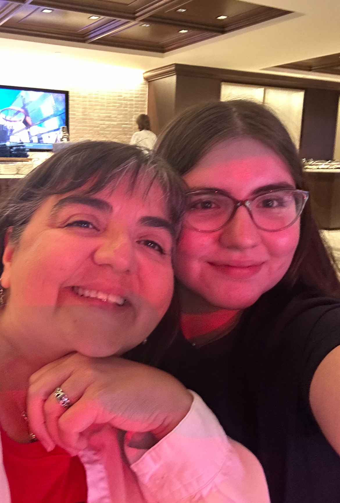
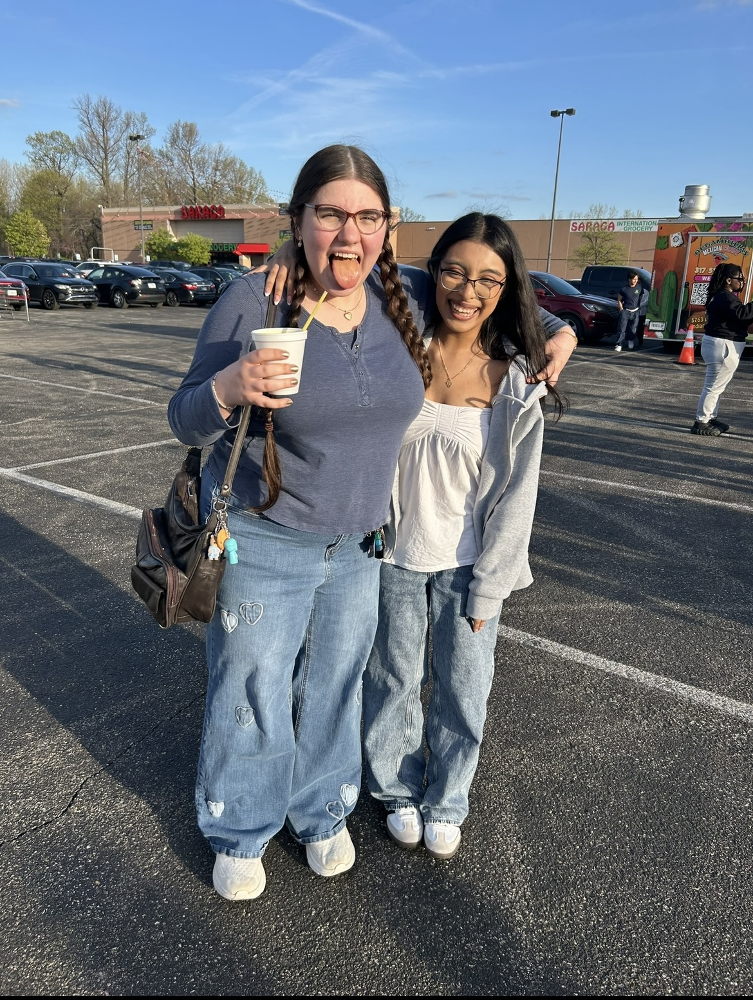
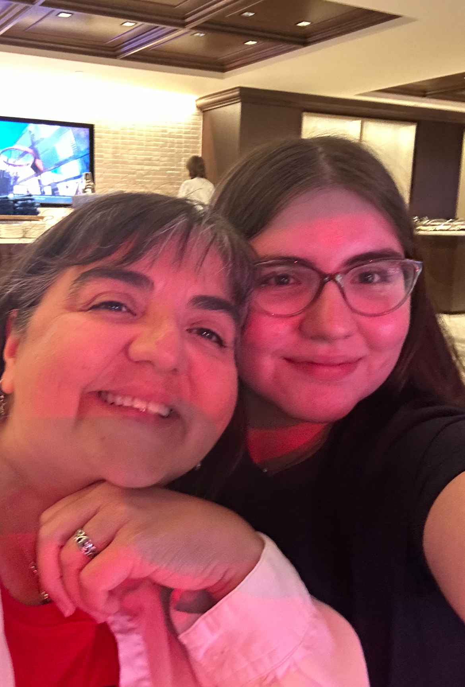
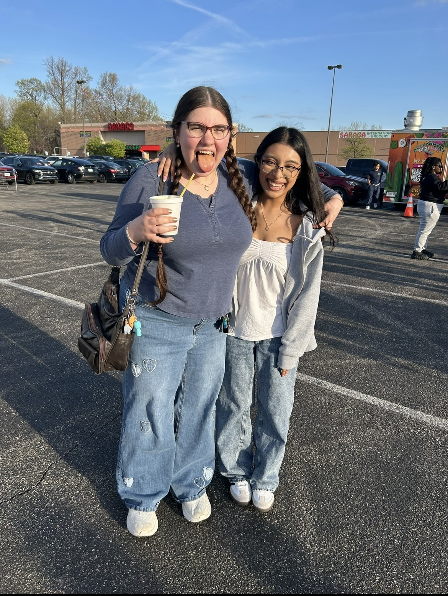

About Me
Bio
While my coding journey technically began with scratch and elementary school robotics, my skills began developing in 8th grade.
☁️
Throughout highschool I practiced Java on my own, and recieved proper education in Software Development at McKenzie Center for Innovation and Technology. Junior year I recieved the Rising Scholar award for the Software Development pathway.
Qualifications
- CSS, HTML, JS Profiecient
- Java Beginner
- Excel, Powerpoint, and Word
- Figma
- Visual Studio Code
- 5 Years Experience
- MCIT Rising Scholar Award 2025 - Software Development
Interests
Videogames, Vinyl, Virology
Even when I'm not coding, many of my hobbies put me in front of a screen. I enjoy videogames, digital art, and writing novels that make me cry. But, when I am pulled away from my devices, you'll find me buried in a history book, enjoying time with loved ones, or collecting various dolls, books, and vinyls.